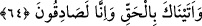
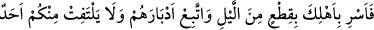
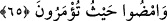
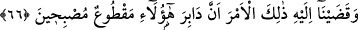

64. Sana gerçeği getirdik; biz, hakîkaten doğru söyleyenleriz.
“Sana,” hakkında şüphe edilmeyecek kesin bir “gerçeği” yâni onların azâba dûçâr
olacağı gerçeğini “getirdik; biz” başlarına azâb geleceğine dâir verdiğimiz bu haberde
“hakîkaten doğru söyleyenleriz.”
65. “Gecenin bir bölümünde aile fertlerini yola çıkar, sen de arkalarından yürü.
Sizden hiç kimse, sakın dönüp de ardına bakmasın, emrolunduğunuz yere gidin.”
Bu bakından hemen “gecenin bir bölümünde,” geceden bir miktar geçince “âile
fertlerini yola çıkar,” Kâşifî der ki: “Geceleyin kendi âileni şehirden dışarı çıkar.”
“Sen de arkalarından yürü.” Yâni, onları sevk ve idâre etmek, çabucak götürmek ve
durumlarına muttalî olabilmek için arkalarında bulun. Böylece senden utanıp geriye
bakmaz ve başka bir yanlış davranış içinde bulunmazlar. Burhânu’l-Kur’ân’da şöyle
der: “Çünkü Lût (a.s.) onları önden gönderip peşlerinden gidince onların kurtulduğunu
bildi ve onların durumu kendisine gizli kalmadı.
“Sizden hiç kimse, sakın dönüp de ardına bakmasın.” Aksi takdirde arkanızda
gördüğünüz dehşete dayanamazsınız. Ya da ‘arkaya dönüp bakmamak’, hiç durup
beklemeden yürümekten kinâyedir. Çünkü ardına bakan kimse, mutlaka az da olsa
duracaktır.
Burada, önceki âyetlerde geçtiği üzere “karısı müstesnâ” ifâdesi ile yetinilerek Hûd
sûresinde olduğu gibi “Karından başka sizden hiçbiri geri bakmasın.” (11/81)
buyrulmamıştır.
“Emrolunduğunuz yere gidin.” Allah’ın gitmenizi emrettiği yere, yâni Şam, Mısır
veya Şam’da bir kasaba olan Zağar’a gidin.
66. Ona (Lût’a) şu hükmümüzü vahyettik: “Sabaha çıkarlarken mutlaka onların
ardı kesilmiş olacaktır.”
“Ona, Lût’a” kesinleşmiş, hükmü verilmiş bir şey olarak “şu hükmümüzü
vahyettik:” Şu suçlular, “sabaha çıkarlarken mutlaka onların ardı kesilmiş